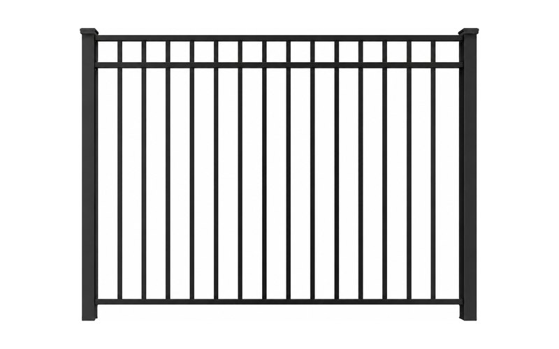
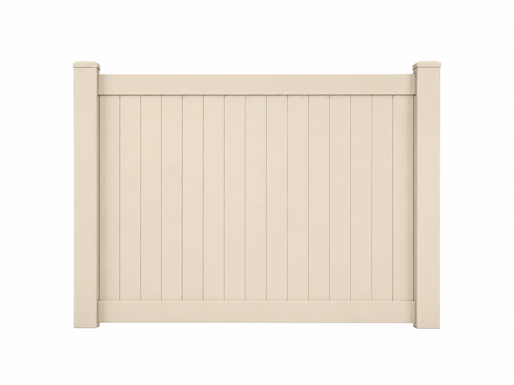

Pool Code What Florida Pool Code Actually Requires The barrier rules people get wrong most often, and the fence systems that pass without a variance.Written by the crew that stocks and fabricates the material, for contractors and homeowners across Southwest Florida.

Pool Code What Florida Pool Code Actually Requires The barrier rules people get wrong most often, and the fence systems that pass without a variance.
Guides Vinyl, Aluminum Or Chain Link: How To Pick Every material trades something away. Here is what each one gives up, said plainly. Shop Notes
Why Our Gates Ship Ready To Install
What happens between your measurements and the gate that comes off the truck.
Shop Notes
Why Our Gates Ship Ready To Install
What happens between your measurements and the gate that comes off the truck.